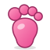
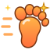

Chaque icône est montrée grande, en 40 / 24 / 16 px et sur fond sombre : une bonne icône reste lisible en tout petit. Les fichiers .svg sont dans ce dossier.
🪙 Pépites
Ce que l'enfant gagne dans les coffres et dépense en boutique.
Pépite A · Pièce étoiléeLa pièce classique, bien dorée, avec une étoile en relief.
Pépite B · Pépite d'orUne vraie pépite : un caillou d'or à facettes qui brille.
Pépite C · GemmeUn diamant à facettes, couleur turquoise (la couleur peut suivre l'univers).
Pépite D · Pièce brillanteBord cranté, grande étincelle au centre : une pièce de trésor.
Pépite E · Pile de piècesTrois pièces empilées : on voit tout de suite « trésor ».
Pépite F · Étoile d'orUne étoile-pièce toute ronde et joyeuse.
👣 Pas
Ce que l'enfant gagne avec les missions et qui le fait avancer sur la carte.
Pas A · Empreinte dégradéeL'empreinte actuelle, redessinée : orteils bien séparés, dégradé orange et reflet.

Pas B · Pied de bébéGros orteils tout ronds, très mignon, très lisible en petit.
Pas C · Carré arrondi bleuEmpreinte blanche sur un carré arrondi : le look d'une icône d'appli, en bleu.
Pas D · Badge empreinteEmpreinte blanche dans une pastille de couleur : très net, même minuscule.

Pas E · Empreinte en mouvementL'empreinte avec une traînée de poussière et des étincelles : ça court !
Pas F · ChaussureUne baskets de profil, sans ambiguïté : « pas » = chaussure.
Aperçu en situation
Combinaisons dans l'en-tête de l'enfant (choisis une pépite et un pas).